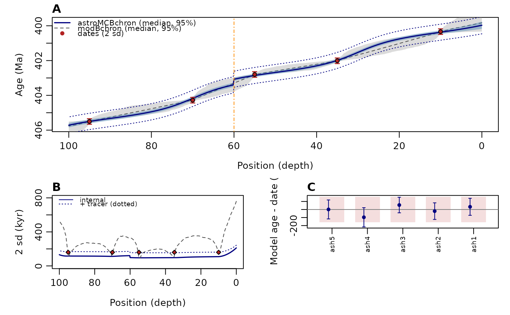

Joint Bayesian age-depth model of radioisotopic dates and a floating astrochronology (astroMCBchron)
Source:R/astroMCBchron.R
astroMCBchron.RdastroMCBchron() combines radioisotopic dates (e.g. CA-ID-TIMS U-Pb) with a
floating astrochronology (the tracked period of an astronomical cycle, typically the
405-kyr eccentricity cycle, as obtained with track_period_wavelet,
completed_series or retrack_wt_MC) in one joint posterior
distribution. The floating astrochronology is not treated as exact: between each pair of
dates its duration is multiplied by a stretch factor whose prior width is set by the
tracking uncertainty (the spread between independently tracked proxies), and the duration
of every hiatus is estimated together with the age model. The dates enter the likelihood
only, so the astrochronology and the dates remain independent sources of information.
The model (Arts et al., in prep.):
the record is divided into intervals bounded by the dated horizons and the top and base of the record. In interval j the floating duration (number of tracked cycles x
target_period) is multiplied by a stretch factor s_j, with log s_j ~ N(0, tau_j^2 + tau0^2). tau_j is the standard error of the floating duration of the interval (between-proxy spread / sqrt(n proxies)) and tau0 a common additional slack with a half-normal prior (sd =tau0_sd). The two outer intervals, which are not bracketed by dates, are tied to their neighbours (sd =outer_sdin log units);each hiatus has a duration H with a normal prior (
hiatuses$mean,hiatuses$sd), truncated at zero;the stratigraphic position of each date may vary uniformly within +/-
thickness(give the real half-thickness of the sampled interval, e.g. 0.005 m for a bed located to the nearest cm); dates that share adepth_groupcan in addition be shifted together by a common depth offset (prior sddepth_offset_sd), for dates whose depths come from a different depth scale than the tracks (e.g. outcrop samples correlated into a core, or box-label depths);the floating astrochronology is drawn from the realisations of the tracked period (one realisation per segment and MCMC state);
the age of every position follows from the age of an anchor date plus the cumulative stretched floating durations and the hiatuses;
date model (
date_model): by default ("mixture") every date has a mixture likelihood, (1 - p) x N(date, sd) + p x outlier component, with the outlier probability p estimated (beta prioroutlier_prior) and the posterior outlier probability of each date reported. The outlier component is a Gaussian withoutlier_kx sd ("scaled"), or one-sided:"old"(the date may be too old, inherited or recycled zircon) or"young"(residual Pb loss)."two_stage"reproduces version 1 (a robust Student-t stage flags dates that move more thanoutlier_zsd; flagged dates enter the final stage withoutlier_kx sd);"gaussian"uses no outlier treatment. Instead of a Gaussian, any date can have its own likelihood (date_loglik, e.g. from single-zircon dates withupb_grain_loglik); it is normalised and combined with the same outlier mixture;systematic uncertainties: dates from different laboratories or tracers (
group) get a systematic offset relative to the reference group (the group of the anchor date), with a prior from the tracer calibration uncertainty of both groups, so that their relative offset is estimated by the astrochronology. The tracer uncertainty of the reference group and the 238U decay-constant uncertainty are common to all ages and are reported as additional envelopes (sd2_tracer_kyr,sd2_total_kyr); they do not affect durations;the within-interval uncertainty is added as a monotone gamma (Dirichlet) bridge between the dates (free gamma walks beyond the outermost dates), with a dispersion per cycle equal to the relative between-proxy spread of the cycle durations; the reported 2 sd is computed analytically (Rao-Blackwellised) from the posterior draws;
optionally, every date is predicted from all other dates and the astrochronology (leave-one-out), which tests the consistency between dates and cycles. The date model (outlier probability, or the two-stage screening) is refitted in every leave-one-out run, so that no information from the full fit is reused.
With bchron = TRUE, a U-Pb-only Bayesian age-depth model with the same dates
(modBchron, a pure-R implementation of modifiedBChron; Trayler et al.,
2020; Haslett and Parnell, 2008) is run alongside, on the same prediction grid, so that
both models and the reduction in uncertainty can be compared directly.
Usage
astroMCBchron(
dates,
tracks,
hiatuses = NULL,
position_type = c("depth", "height"),
age_unit = c("Ma", "ka"),
target_period = 405,
proxy_tracks = NULL,
tau = NULL,
tau_method = c("se", "sd"),
eps = NULL,
tau0_sd = 0.03,
outer_sd = 0.2,
anchor = NULL,
date_model = c("mixture", "two_stage", "gaussian"),
two_stage = NULL,
outlier_type = c("scaled", "old", "young"),
outlier_prior = c(1, 19),
nu = 4,
outlier_z = 3,
outlier_k = 4,
inflate_mswd = TRUE,
tracer_rel = 0.00015,
decay_rel = 0.00054,
depth_offset_sd = NULL,
n_iter = 3e+05,
thin = 50,
burn_frac = 0.2,
n_tracks = 1000,
loo = TRUE,
loo_iter = NULL,
predict_positions = NULL,
max_curves = 5000,
n_bridge = NULL,
date_loglik = NULL,
bchron = FALSE,
bchron_split = FALSE,
bchron_args = list(),
temper = NULL,
loo_ids = NULL,
misfit = c("window", "localised", "stretch"),
misfit_window = 100,
band = c("analytic", "curves"),
seed = NULL,
verbose = TRUE,
genplot = FALSE
)Arguments
- dates
Radioisotopic dates (data frame with one row per dated horizon, at least two rows). Required columns:
age(inage_unit),sd(1 sigma, same unit asage, > 0) andposition(depth or height, same unit as the tracks; two dates may not share a position). Optional columns:id(character; default"date_1","date_2", ...);thickness(half thickness of the uniform stratigraphic position uncertainty, position units; default 0);mswd(MSWD of a weighted-mean date; its sd is multiplied by sqrt(MSWD) when MSWD > 1 andinflate_mswd = TRUE);group(laboratory or tracer group, character or numeric; dates of other groups than that of the anchor get an estimated systematic offset;NA= the first group);tracer_rel(1 sd relative tracer-calibration uncertainty of the date; overrides the argumenttracer_rel);depth_group(label of dates whose depths share one unknown offset, e.g. samples correlated from another section;NA= none; needsdepth_offset_sd).
Give the internal (analytical, X) uncertainty in
sd: the tracer and decay-constant terms are handled bygroup,tracer_relanddecay_rel. Required, no default.- tracks
Floating astrochronology: list with one element per continuous segment (number of hiatuses + 1), ordered from the youngest (top) to the oldest (base) segment. Each element is either (i) a list with
position(numeric vector) andperiod(matrix positions x realisations, or a vector), (ii) aretrack_wt_MC-style object, i.e. a list whose first element is a matrix with the position in its first column and whose second element is the matrix of period realisations, or (iii) a matrix/data frame with the position in column 1 and one or more period realisations in the other columns. Periods are in position units (e.g. m) pertarget_period. Without hiatuses a single such object may be given. Required, no default.- hiatuses
Hiatuses (data frame with the columns
position,meanandsd: position of the hiatus and the mean and 1 sigma (> 0) of the normal prior on its duration in kyr, truncated at zero);NULLmeans no hiatus.Default=NULL.- position_type
Direction of the positions (character):
"depth"(positions increase downwards, i.e. with age) or"height"(positions increase upwards).Default=c("depth", "height"), i.e."depth".- age_unit
Unit of
dates$age,dates$sdand of the output ages (character):"Ma"or"ka"(= kyr).Default=c("Ma", "ka"), i.e."Ma".- target_period
Period in kyr of the tracked astronomical cycle (numeric, > 0); the floating duration of an interval is the number of tracked cycles times
target_period.Default=405.- proxy_tracks
Single-proxy tracks used to compute
tau(stretch prior) andeps(within-interval spread) from the between-proxy spread (list with one element per segment, each a named list of per-proxy tracks given as a data frame or matrix with the position in column 1 and the period in column 2);NULLuses the spread of the realisations intracks.Default=NULL.- tau
Widths (sd in log units) of the stretch priors that override the computed ones (numeric vector with one value per interval between consecutive dates, or a single value used for all intervals);
NULLcomputes them (seetau_method).Default=NULL.- tau_method
How tau is computed from
proxy_tracks(character):"se"(between-proxy sd / sqrt(number of proxies)) or"sd"(between-proxy sd). Withoutproxy_tracks, tau is the sd of the log floating durations over the track realisations.Default=c("se", "sd"), i.e."se".- eps
Within-interval relative spread per cycle used for the gamma (Dirichlet) bridge between the dates: a single number (>= 0), or a data frame with the columns
positionandeps;NULLcomputes it fromproxy_tracks(between-proxy standard error per cycle) or, without them, from the spread of the track realisations.Default=NULL.- tau0_sd
Standard deviation (log units) of the half-normal prior on the common additional slack tau0 of all stretch factors (numeric, >= 0);
0fixes tau0 at 0.Default=0.03.- outer_sd
Standard deviation (log units) of the prior tying the stretch factors of the two outer intervals (not bracketed by dates) to those of their neighbours (numeric, > 0).
Default=0.2.- anchor
idof the date used as the age anchor (a single value of the type ofdates$id);NULLuses the most precise date (smallestsd).Default=NULL.- date_model
Likelihood model of the dates (character):
"mixture"(each date is a mixture of a Gaussian and an outlier component, with an estimated outlier probability; seeoutlier_type,outlier_prior,outlier_k),"two_stage"(the robust two-stage screening of version 1: a Student-t stage flags dates that move more thanoutlier_zsd, flagged dates enter the final Gaussian stage withoutlier_kx sd) or"gaussian"(plain Gaussian likelihood, no outlier treatment).Default=c("mixture", "two_stage", "gaussian"), i.e."mixture".- two_stage
Deprecated, kept for compatibility with version 1 (logical or
NULL):TRUEisdate_model = "two_stage",FALSEisdate_model = "gaussian"; if given it overridesdate_model.NULLusesdate_model.Default=NULL.- outlier_type
Outlier component of the mixture (character):
"scaled"(Gaussian around the date withoutlier_kx sd),"old"(one-sided: the true age may be younger than the date, i.e. the date too old, e.g. inherited or recycled zircon) or"young"(one-sided: the date may be too young, e.g. residual Pb loss). Only used withdate_model = "mixture".Default=c("scaled", "old", "young"), i.e."scaled".- outlier_prior
Shape parameters of the beta prior on the outlier probability p (numeric vector of length 2, both > 0:
c(a, b), prior mean a / (a + b)). Only used withdate_model = "mixture".Default=c(1, 19)(prior mean 0.05).- nu
Degrees of freedom of the Student-t likelihood of the dates in stage 1 of
date_model = "two_stage"(numeric, > 0); smaller values are more robust to outliers.Default=4.- outlier_z
Threshold for flagging a date in
date_model = "two_stage": a date is flagged when its stage-1 shift exceedsoutlier_ztimes its sd (numeric, > 0).Default=3.- outlier_k
Width of the outlier component in multiples of the sd of the date (
date_model = "mixture"), or the factor by which the sd of a flagged date is multiplied in the final stage ofdate_model = "two_stage"(numeric, >= 1).Default=4.- inflate_mswd
Multiply the sd of dates with an MSWD > 1 (column
dates$mswd) by sqrt(MSWD) (logical, TRUE or FALSE); without that column it has no effect.Default=TRUE.- tracer_rel
Relative tracer-calibration uncertainty (1 sd, as a fraction of the age) of the dates (numeric, >= 0); a column
dates$tracer_reloverrides it per date. It sets the prior of the offsets between laboratory groups and the tracer envelopesd2_tracer_kyr.Default=1.5e-4(0.03 % at 2 sd, EARTHTIME ET535/ET2535; Condon et al., 2015).- decay_rel
Relative 238U decay-constant uncertainty (1 sd, as a fraction of the age) (numeric, >= 0); only used for the total envelope
sd2_total_kyr, it does not affect durations.Default=5.4e-4(0.108 % at 2 sd; Jaffey et al., 1971).- depth_offset_sd
Standard deviation (position units) of the common depth offset of each depth group (numeric, > 0: one value for all groups, or a vector named by the labels in
dates$depth_group). Required whendates$depth_groupis given, ignored otherwise.Default=NULL.- n_iter
Number of MCMC iterations of the final stage (integer, > 0; stage 1 of
"two_stage"uses half).Default=3e5.- thin
Thinning interval of the MCMC chain: every
thin-th state after the burn-in is kept (integer, >= 1).Default=50.- burn_frac
Fraction of the iterations discarded as burn-in, during which the proposal widths are adapted (numeric, between 0 and 1).
Default=0.2.- n_tracks
Number of track realisations drawn per segment for the floating astrochronology (integer, > 0).
Default=1000.- loo
Predict every date (or the dates in
loo_ids) from all other dates and the astrochronology (leave-one-out), which tests the consistency between dates and cycles (logical, TRUE or FALSE); this runs one extra MCMC per date, with the date model refitted each time.Default=TRUE.- loo_iter
Number of MCMC iterations per leave-one-out run (integer, > 0);
NULLusesround(n_iter / 3).Default=NULL.- predict_positions
Positions at which the age model is evaluated (numeric vector, same unit and type as
dates$position; must span all dated positions);NULLuses 501 equidistant positions spanning the dates and the tracks.Default=NULL.- max_curves
Maximum number of age-depth curves stored in the result (integer, > 0); larger values need more memory.
Default=5000.- n_bridge
Number of bridge realisations per posterior draw used for the percentiles (integer, > 0);
NULLuses enough for at least 10000 curves, at most 20 per draw.Default=NULL.- date_loglik
Own likelihoods of the dates that replace the Gaussian date likelihood, e.g. from single-zircon dates with
upb_grain_loglik(list with one function per date, in the order of the rows ofdates; each takes an age inage_unitand returns its log-likelihood). The functions are normalised numerically and combined with the outlier mixture;dates$ageanddates$sdthen only set the integration grid. Cannot be combined withdate_model = "two_stage"("mixture"is used, with a warning).NULLuses the Gaussian likelihood.Default=NULL.- bchron
Also run the U-Pb-only
modBchronage-depth model with the same dates on the same prediction grid, for comparison (logical, TRUE or FALSE).Default=FALSE.- bchron_split
With hiatuses, run one
modBchronmodel per segment (dates within the segment) and estimate the hiatus duration from the difference between the models at the hiatus, as in Cramer et al. (2026) (logical, TRUE or FALSE);FALSEruns one model through all dates.Default=FALSE.- bchron_args
Further arguments passed to
modBchron(named list, e.g.MC,burn,truncateUp,truncateDown).Default=list().- temper
Inverse temperatures for parallel tempering of the final stage (numeric vector, first value 1, strictly decreasing, all > 0; Swendsen and Wang, 1986), e.g.
exp(seq(0, log(0.01), length.out = 8)). Only the astronomical part of the posterior (stretch-factor priors, ties of the outer intervals and hiatus priors) is tempered; the dates, positions and tau0 enter every chain at full weight (partial tempering, Kjellson et al., 2026). Hot chains can change the number of cycles between dates, so alternative solutions that a single chain would miss are found and weighted; samples are taken from the chain at 1. Costs one MCMC per temperature.NULLruns one chain.Default=NULL.- loo_ids
ids of the dates for the leave-one-out test (vector of values ofdates$id);NULLtests all dates. Only used withloo = TRUE.Default=NULL.- misfit
How the posterior departure of an interval's duration from its posterior mean (the misfit between the floating time scale and the dates) is placed inside the interval (character; one of
"window","localised","stretch")."window": at one random position, spread uniformly in time over one contiguous window ofmisfit_windowkyr of floating time (one cycle with a different accumulation rate); a negative misfit compresses the window (the window is widened where needed so that no step loses more than 70 % of its time)."localised": at one horizon of unknown position (one step of the prediction grid; a miscounted cycle or a condensed level)."stretch": spread uniformly over the interval (rigid stretch, the behaviour of earlier versions). With"stretch"the age between two dates is a fixed interpolation between two uncertain end ages, whose variance (1 - w)^2 V_i + w^2 V_i+1 + 2 w (1 - w) C is convex and can be smaller between the dates than at either date. With"localised"the variance becomes (1 - w) V_i + w V_i+1 (w = fraction of the interval in floating time) plus the per-cycle bridge variance: linear between the dated horizons, so it never has an interior minimum. With"window"the variance is the rigid-stretch variance plus 2 (E[F] - w) Cov(a_i, delta) + (E[F^2] - w^2) E[delta^2] (F = share of the window below w), which tends to the localised variance for a short window and stays within a few kyr of it for windows of ~100 kyr, while the stored curves keep time everywhere (no empty steps, no one-step jumps). No option loosens a constraint: the posterior, the mean age model and the interval durations between dates are the same. Where a hiatus inside an interval (an uncertainty step at a known position) or Monte Carlo noise would still create a dip, the 2 sd and the half-widths of the 95 % band are replaced by their smallest unimodal majorant within each dated interval (conservative;"window"and"localised"only; the amount is reported insummary$guard_raise_kyr).Default=c("window", "localised", "stretch"), i.e."window".- misfit_window
Length in kyr of floating time of the window used for
misfit = "window"(numeric, single value > 0).Default=100(about one short-eccentricity cycle).- band
How the 95 % band and the median in
summaryare computed (character):"analytic"mean +/- 1.96 x the analytic sd, median = mean (no Monte Carlo noise), or"curves"the 2.5, 50 and 97.5 percentiles of the age-depth curves. Both are returned (median_mc,lower_mc,upper_mchold the percentiles).Default=c("analytic", "curves"), i.e."analytic".- seed
Seed of the random number generator (integer), so that the MCMC results can be reproduced;
NULLleaves the current random state unchanged.Default=NULL.- verbose
Print progress messages (logical, TRUE or FALSE).
Default=TRUE.- genplot
Plot the result with
plot()(plot.astroMCBchron) (logical, TRUE or FALSE).Default=FALSE.
Value
An object of class astroMCBchron: a list with
- model
matrix of age-depth curves (rows =
predictPositions, columns = realisations), inage_unit; the same layout as themodelelement ofmodBchronoutput.- predictPositions
positions of the rows of
model.- summary
data.frame: position, mean, median, lower and upper end of the 95 % band (see
band), the internal 2 sd (sd2_kyr), the 2 sd including the tracer term (sd2_tracer_kyr) and including the decay constant (sd2_total_kyr) with the corresponding 95 % ranges (lower_tracer,upper_tracer,lower_total,upper_total), the 2.5, 50 and 97.5 percentiles of the curves (median_mc,lower_mc,upper_mc) and the amount by which the guard raised the 2 sd (guard_raise_kyr).- dates
data.frame: date, effective date (mean and 2 sd of its likelihood), posterior age and 2 sd, shift (kyr and sd), posterior outlier probability and flag (> 0.5), leave-one-out prediction and z-score.
- outlier_prob, group_offsets, depth_offsets
posterior draws of the outlier probability (
date_model = "mixture"only), the laboratory offsets (kyr) and the depth offsets.- stretch
matrix of posterior stretch factors (draws x intervals).
- hiatus
matrix of posterior hiatus durations (kyr).
- tau, tau0, eps
stretch-prior widths, posterior of the common slack and the within-interval spread profile.
- stage1, loo
stage-1 screening and leave-one-out tables.
- bchron, comparison
the
modBchronmodel(s) and a comparison table of the 2 sd of both models (ifbchron = TRUE).- posterior, tempering, acceptance, call, settings
raw posterior states, parallel-tempering diagnostics (swap acceptance, round trips;
NULLwithouttemper), acceptance rates and settings.
References
Condon, D.J., Schoene, B., McLean, N.M., Bowring, S.A., Parrish, R.R., 2015. Metrology and traceability of U-Pb isotope dilution geochronology (EARTHTIME Tracer Calibration Part I). Geochimica et Cosmochimica Acta 164, 464-480.
Cramer, B.D., Schmitz, M.D., Trayler, R.B., Stolfus, B.M., Peate, D.W., McAdams, N.E.B., Arts, M., Da Silva, A.-C., 2026. Quantifying uncertainty in the structure and duration of Silurian biogeochemical events. Scientific Reports.
Haslett, J., Parnell, A., 2008. A simple monotone process with application to radiocarbon-dated depth chronologies. Journal of the Royal Statistical Society C 57, 399-418.
Jaffey, A.H., Flynn, K.F., Glendenin, L.E., Bentley, W.C., Essling, A.M., 1971. Precision measurement of half-lives and specific activities of 235U and 238U. Physical Review C 4, 1889-1906.
Swendsen, R.H., Wang, J.-S., 1986. Replica Monte Carlo simulation of spin-glasses. Physical Review Letters 57, 2607-2609.
Trayler, R.B., Schmitz, M.D., Cuitino, J.I., Kohn, M.J., Bargo, M.S., Kay, R.F., Stromberg, C.A.E., Vizcaino, S.F., 2020. An improved approach to age-modeling in deep time: Implications for the Santa Cruz Formation, Argentina. GSA Bulletin 132, 233-244.
Examples
# \donttest{
## synthetic example: accumulation rate varying between 1 and 3 cm/kyr (so that interpolating
## between the dates is wrong), a 300-kyr hiatus at 60 m, five dates with 1 sigma = 80 kyr and a
## floating 405-kyr astrochronology (the tracked period in m, 40 realisations with 2 % noise)
set.seed(1)
rate <- function(z) 0.02 * (1 + 0.5 * sin(2 * pi * z / 40)) # m/kyr
zz <- seq(0, 100, 0.05)
age_z <- 400000 + c(0, cumsum(diff(zz) / rate(zz[-1]))) + ifelse(zz > 60, 300, 0) # kyr
true_age <- function(z) approx(zz, age_z, z)$y
z_dates <- c(10, 35, 55, 70, 95)
dates <- data.frame(id = paste0("ash", 1:5), position = z_dates,
age = true_age(z_dates) / 1000 + rnorm(5, 0, 0.08), sd = 0.08,
thickness = 0.5)
trk <- function(z) {
period <- matrix(NA_real_, length(z), 40)
for (i in 1:40) {
period[, i] <- 405 * rate(z) * exp(rnorm(1, 0, 0.02))
}
list(position = z, period = period)
}
fit <- astroMCBchron(dates, tracks = list(trk(seq(0, 60, 0.25)), trk(seq(60, 100, 0.25))),
hiatuses = data.frame(position = 60, mean = 280, sd = 60),
n_iter = 5000, loo = FALSE, bchron = TRUE,
bchron_args = list(MC = 1000, burn = 300))
#> astroMCBchron: 5 dates, 1 hiatus(es), 6 intervals, 1000 track realisations; tau from track realisations; date model mixture (scaled outliers, beta(1, 19) prior on the outlier probability)
#> MCMC: 5000 iterations, 80 draws, 0.1 min; acceptance A 0.3 s 0.41 t 0.35 H 0.31 z 0.97 k 0.58 po 0.66 d 0 o 0
#> outlier probability: 0.033 [0.001-0.156]; posterior outlier probability per date: max 0.05 (ash4)
#> modBchron: 5 dates, 1000 iterations
#> Warning: positions not given in order - re-ordering
#>
|
| | 0%
|
| | 1%
|
|<> | 1%
|
|<> | 2%
|
|<> | 3%
|
|<> | 4%
|
|<><> | 4%
|
|<><> | 5%
|
|<><> | 6%
|
|<><><> | 6%
|
|<><><> | 7%
|
|<><><> | 8%
|
|<><><> | 9%
|
|<><><><> | 9%
|
|<><><><> | 10%
|
|<><><><> | 11%
|
|<><><><><> | 11%
|
|<><><><><> | 12%
|
|<><><><><> | 13%
|
|<><><><><> | 14%
|
|<><><><><><> | 14%
|
|<><><><><><> | 15%
|
|<><><><><><> | 16%
|
|<><><><><><><> | 16%
|
|<><><><><><><> | 17%
|
|<><><><><><><> | 18%
|
|<><><><><><><> | 19%
|
|<><><><><><><><> | 19%
|
|<><><><><><><><> | 20%
|
|<><><><><><><><> | 21%
|
|<><><><><><><><><> | 21%
|
|<><><><><><><><><> | 22%
|
|<><><><><><><><><> | 23%
|
|<><><><><><><><><> | 24%
|
|<><><><><><><><><><> | 24%
|
|<><><><><><><><><><> | 25%
|
|<><><><><><><><><><> | 26%
|
|<><><><><><><><><><><> | 26%
|
|<><><><><><><><><><><> | 27%
|
|<><><><><><><><><><><> | 28%
|
|<><><><><><><><><><><> | 29%
|
|<><><><><><><><><><><><> | 29%
|
|<><><><><><><><><><><><> | 30%
|
|<><><><><><><><><><><><> | 31%
|
|<><><><><><><><><><><><><> | 31%
|
|<><><><><><><><><><><><><> | 32%
|
|<><><><><><><><><><><><><> | 33%
|
|<><><><><><><><><><><><><> | 34%
|
|<><><><><><><><><><><><><><> | 34%
|
|<><><><><><><><><><><><><><> | 35%
|
|<><><><><><><><><><><><><><> | 36%
|
|<><><><><><><><><><><><><><><> | 36%
|
|<><><><><><><><><><><><><><><> | 37%
|
|<><><><><><><><><><><><><><><> | 38%
|
|<><><><><><><><><><><><><><><> | 39%
|
|<><><><><><><><><><><><><><><><> | 39%
|
|<><><><><><><><><><><><><><><><> | 40%
|
|<><><><><><><><><><><><><><><><> | 41%
|
|<><><><><><><><><><><><><><><><><> | 41%
|
|<><><><><><><><><><><><><><><><><> | 42%
|
|<><><><><><><><><><><><><><><><><> | 43%
|
|<><><><><><><><><><><><><><><><><> | 44%
|
|<><><><><><><><><><><><><><><><><><> | 44%
|
|<><><><><><><><><><><><><><><><><><> | 45%
|
|<><><><><><><><><><><><><><><><><><> | 46%
|
|<><><><><><><><><><><><><><><><><><><> | 46%
|
|<><><><><><><><><><><><><><><><><><><> | 47%
|
|<><><><><><><><><><><><><><><><><><><> | 48%
|
|<><><><><><><><><><><><><><><><><><><> | 49%
|
|<><><><><><><><><><><><><><><><><><><><> | 49%
|
|<><><><><><><><><><><><><><><><><><><><> | 50%
|
|<><><><><><><><><><><><><><><><><><><><> | 51%
|
|<><><><><><><><><><><><><><><><><><><><><> | 51%
|
|<><><><><><><><><><><><><><><><><><><><><> | 52%
|
|<><><><><><><><><><><><><><><><><><><><><> | 53%
|
|<><><><><><><><><><><><><><><><><><><><><> | 54%
|
|<><><><><><><><><><><><><><><><><><><><><><> | 54%
|
|<><><><><><><><><><><><><><><><><><><><><><> | 55%
|
|<><><><><><><><><><><><><><><><><><><><><><> | 56%
|
|<><><><><><><><><><><><><><><><><><><><><><><> | 56%
|
|<><><><><><><><><><><><><><><><><><><><><><><> | 57%
|
|<><><><><><><><><><><><><><><><><><><><><><><> | 58%
|
|<><><><><><><><><><><><><><><><><><><><><><><> | 59%
|
|<><><><><><><><><><><><><><><><><><><><><><><><> | 59%
|
|<><><><><><><><><><><><><><><><><><><><><><><><> | 60%
|
|<><><><><><><><><><><><><><><><><><><><><><><><> | 61%
|
|<><><><><><><><><><><><><><><><><><><><><><><><><> | 61%
|
|<><><><><><><><><><><><><><><><><><><><><><><><><> | 62%
|
|<><><><><><><><><><><><><><><><><><><><><><><><><> | 63%
|
|<><><><><><><><><><><><><><><><><><><><><><><><><> | 64%
|
|<><><><><><><><><><><><><><><><><><><><><><><><><><> | 64%
|
|<><><><><><><><><><><><><><><><><><><><><><><><><><> | 65%
|
|<><><><><><><><><><><><><><><><><><><><><><><><><><> | 66%
|
|<><><><><><><><><><><><><><><><><><><><><><><><><><><> | 66%
|
|<><><><><><><><><><><><><><><><><><><><><><><><><><><> | 67%
|
|<><><><><><><><><><><><><><><><><><><><><><><><><><><> | 68%
|
|<><><><><><><><><><><><><><><><><><><><><><><><><><><> | 69%
|
|<><><><><><><><><><><><><><><><><><><><><><><><><><><><> | 69%
|
|<><><><><><><><><><><><><><><><><><><><><><><><><><><><> | 70%
|
|<><><><><><><><><><><><><><><><><><><><><><><><><><><><> | 71%
|
|<><><><><><><><><><><><><><><><><><><><><><><><><><><><><> | 71%
|
|<><><><><><><><><><><><><><><><><><><><><><><><><><><><><> | 72%
|
|<><><><><><><><><><><><><><><><><><><><><><><><><><><><><> | 73%
|
|<><><><><><><><><><><><><><><><><><><><><><><><><><><><><> | 74%
|
|<><><><><><><><><><><><><><><><><><><><><><><><><><><><><><> | 74%
|
|<><><><><><><><><><><><><><><><><><><><><><><><><><><><><><> | 75%
|
|<><><><><><><><><><><><><><><><><><><><><><><><><><><><><><> | 76%
|
|<><><><><><><><><><><><><><><><><><><><><><><><><><><><><><><> | 76%
|
|<><><><><><><><><><><><><><><><><><><><><><><><><><><><><><><> | 77%
|
|<><><><><><><><><><><><><><><><><><><><><><><><><><><><><><><> | 78%
|
|<><><><><><><><><><><><><><><><><><><><><><><><><><><><><><><> | 79%
|
|<><><><><><><><><><><><><><><><><><><><><><><><><><><><><><><><> | 79%
|
|<><><><><><><><><><><><><><><><><><><><><><><><><><><><><><><><> | 80%
|
|<><><><><><><><><><><><><><><><><><><><><><><><><><><><><><><><> | 81%
|
|<><><><><><><><><><><><><><><><><><><><><><><><><><><><><><><><><> | 81%
|
|<><><><><><><><><><><><><><><><><><><><><><><><><><><><><><><><><> | 82%
|
|<><><><><><><><><><><><><><><><><><><><><><><><><><><><><><><><><> | 83%
|
|<><><><><><><><><><><><><><><><><><><><><><><><><><><><><><><><><> | 84%
|
|<><><><><><><><><><><><><><><><><><><><><><><><><><><><><><><><><><> | 84%
|
|<><><><><><><><><><><><><><><><><><><><><><><><><><><><><><><><><><> | 85%
|
|<><><><><><><><><><><><><><><><><><><><><><><><><><><><><><><><><><> | 86%
|
|<><><><><><><><><><><><><><><><><><><><><><><><><><><><><><><><><><><> | 86%
|
|<><><><><><><><><><><><><><><><><><><><><><><><><><><><><><><><><><><> | 87%
|
|<><><><><><><><><><><><><><><><><><><><><><><><><><><><><><><><><><><> | 88%
|
|<><><><><><><><><><><><><><><><><><><><><><><><><><><><><><><><><><><> | 89%
|
|<><><><><><><><><><><><><><><><><><><><><><><><><><><><><><><><><><><><> | 89%
|
|<><><><><><><><><><><><><><><><><><><><><><><><><><><><><><><><><><><><> | 90%
|
|<><><><><><><><><><><><><><><><><><><><><><><><><><><><><><><><><><><><> | 91%
|
|<><><><><><><><><><><><><><><><><><><><><><><><><><><><><><><><><><><><><> | 91%
|
|<><><><><><><><><><><><><><><><><><><><><><><><><><><><><><><><><><><><><> | 92%
|
|<><><><><><><><><><><><><><><><><><><><><><><><><><><><><><><><><><><><><> | 93%
|
|<><><><><><><><><><><><><><><><><><><><><><><><><><><><><><><><><><><><><> | 94%
|
|<><><><><><><><><><><><><><><><><><><><><><><><><><><><><><><><><><><><><><> | 94%
|
|<><><><><><><><><><><><><><><><><><><><><><><><><><><><><><><><><><><><><><> | 95%
|
|<><><><><><><><><><><><><><><><><><><><><><><><><><><><><><><><><><><><><><> | 96%
|
|<><><><><><><><><><><><><><><><><><><><><><><><><><><><><><><><><><><><><><><> | 96%
|
|<><><><><><><><><><><><><><><><><><><><><><><><><><><><><><><><><><><><><><><> | 97%
|
|<><><><><><><><><><><><><><><><><><><><><><><><><><><><><><><><><><><><><><><> | 98%
|
|<><><><><><><><><><><><><><><><><><><><><><><><><><><><><><><><><><><><><><><> | 99%
|
|<><><><><><><><><><><><><><><><><><><><><><><><><><><><><><><><><><><><><><><><>| 99%
|
|<><><><><><><><><><><><><><><><><><><><><><><><><><><><><><><><><><><><><><><><>| 100%
#> Warning: collapsing to unique 'x' values
#> Warning: collapsing to unique 'x' values
#> Warning: collapsing to unique 'x' values
#> Warning: collapsing to unique 'x' values
#> Warning: collapsing to unique 'x' values
#> uncertainty reduction vs modBchron between the outermost dates: mean 53% (median 56%)
fit
#> astroMCBchron model: 5 dates, 1 hiatus(es); anchor ash1; tau from track realisations; 80 posterior draws, 1600 curves stored
#> date model: mixture (scaled outliers); outlier probability 0.033 [0.001-0.156]
#>
#> Dates (Ma) and posterior ages:
#> id position date posterior 2sd_kyr shift_kyr shift_sd outlier p_outlier
#> ash1 10 400.334 400.368 106 34 0.42 FALSE 0.02
#> ash2 35 402.012 401.992 103 -20 -0.25 FALSE 0.01
#> ash3 55 402.800 402.855 97 56 0.69 FALSE 0.02
#> ash4 70 404.278 404.181 119 -97 -1.21 FALSE 0.05
#> ash5 95 405.502 405.503 118 1 0.01 FALSE 0.02
#>
#> Stretch factors (median [95%]):
#> interval median lower upper
#> 0.00- 10.00 1.01 0.72 1.54
#> 10.00- 35.00 1.00 0.95 1.06
#> 35.00- 55.00 1.00 0.94 1.05
#> 55.00- 70.00 1.01 0.96 1.09
#> 70.00- 95.00 1.00 0.95 1.06
#> 95.00-100.00 1.00 0.73 1.36
#> Hiatus at 60: 319 +/- 111 kyr (2 sd)
#> tau0: 0.020 [0.001-0.068]
#> 2 sd (mean over the record): internal 111 kyr; + tracer 165 kyr; + decay constant 465 kyr
#> 2 sd reduction vs modBchron between the outermost dates: mean 53%, median 56%
plot(fit)

# error against the truth: astrochronology + dates against the dates alone
s <- fit$summary
mean(abs(s$median - true_age(s$position) / 1000)) * 1000 # kyr
#> [1] 16.79023
# }